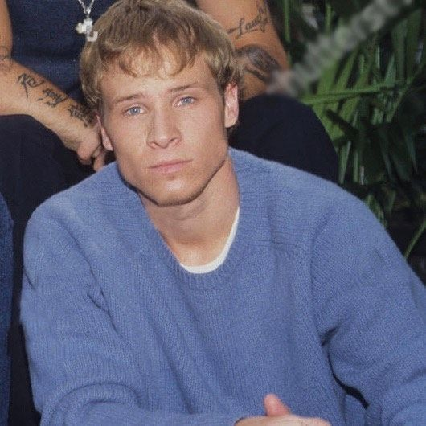
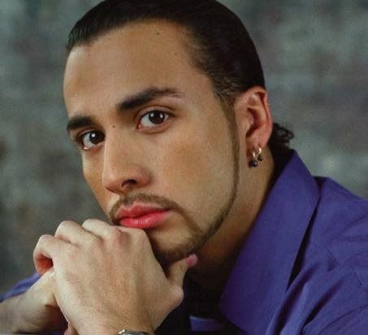

Meet the Band
The Backstreet Boys are the most successful boy band in history, having sold over 130 million records worldwide. Rising to fame with their third album Millennium (1999) and the iconic hit "I Want It That Way," they've cemented their legacy as one of the greatest musical acts of all time.
Meet the Band Members

AJ McLean
Founding member and vocalist. Born January 9, 1978, in West Palm Beach, Florida. Contributed to the "It Gets Better Project."

Nick Carter
Lead vocalist. Born January 28, 1980, in Jamestown, New York. The youngest member with three siblings.

Kevin Richardson
Born October 3, 1971, in Lexington, Kentucky. Cousin of Brian Littrell. Grew up on a 10-acre farm with his family.

Brian Littrell
Singer, songwriter, and actor. Born February 20, 1975, in Lexington, Kentucky. Released solo album "Welcome Home" (2006). Raised in a Baptist family.

Howie Dorough
"Howie D" - Singer and actor. Born August 22, 1973, in Orlando, Florida. Youngest of 6 siblings. Met AJ McLean in Orlando.